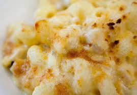

Mac and Cheese

Description
Delicious mac and cheese that feeds up to 4 adults. Do not eat if you are lactose intolerant.
Ingredients
- 1 box of pasta
- 1/4 cup of butter
- 1/4 cup of flower
- 2 cups of milk
- 2lbs of shredded cheese
Steps
- Cook pasta on stove top until just before al dente
- Put butter, flower, milk, and shredded cheese into a pot on the stove. Stir and cook until melted
- Put cooked pasta into an oven-friendly dish
- Pour mixture over pasta
- Place pasta and cheese mixture into the oven until the top starts to become crispy